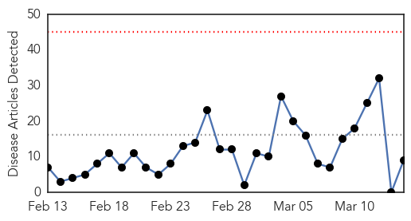
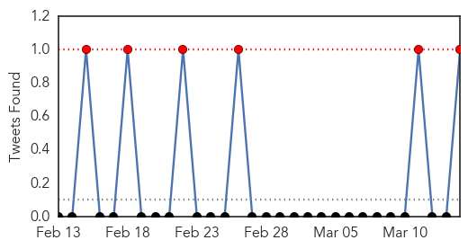

30 Day Trends
Web: 0 alerts, 0 warnings
Twitter: 3 alerts, 0 warnings
Top Articles:
- 0.937
- Study Suggests a New Strain of H1N1 May Carry Dangerous Mutations
- 0.924
- Strain of highly contagious bird flu detected in Kansas
- 0.916
- USDA: Strain of highly contagious bird flu detected in Kansas
- 0.868
- New avian flu outbreak along Mississippi flyway challenges fowl farmers
- 0.818
- Avian Flu Virus Detected at Three Farms, Wild Bird in US
- 0.771
- US poultry industry in peril as bird flu spreads
- 0.751
- March 13, 2015 Archives
- 0.742
- U.S. bird experts mystified by Midwest avian flu spread
- 0.740
- Poultry Owners Should be Vigilant in Watching for Signs of Avian Influenza
Top Tweets:
- 0.953
- Influenza H1N1 variant suspected in Indian influenza outbreak. http://t.co/S37b3rFdGW
- 0.554
- flu vaccine given under surface of skin includes 4 different inactivated influenza A & B viruses, is safe & works http://t.co/6SDFGQqyzM
Web/News Articles
Tweets
Article Locations